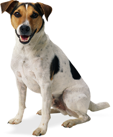

A Solon clinica hoje em dia é um rascunho, mas um dia irá se tornar real, foi idealizada por Bionor Nogueira, é uma clinica sem fins lucrativos, para tratamento de animais domestestícos no sertão central do Estado do Ceará, pensada para atendimento em várias cidades do Estado.
